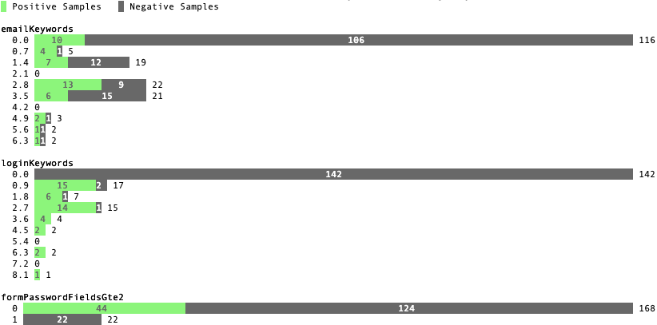

Training¶
Training is the process by which Fathom combines your handwritten rules with your labeled example pages to create the most accurate possible recognizer. Training emits a set of numerical parameters:
One coefficient per rule, which indicates the rule’s relative weight
One bias per type, which centers element’s scores so they can be construed as 0..1 confidences
Running the Trainer¶
Note
Fathom has had several trainers over its evolution. Both the Corpus Framework and the trainer built into old versions of FathomFox are obsoleted by fathom train, described herein.
Once your samples are collected and at least several rules are written, you’re ready to do some initial training. Training is done for one type at a time. If you have types that depend on other types (an advanced case), train the other types first.
Run the trainer. A simple beginning, using just a training set, is…
fathom train samples/training --ruleset rulesets.js --trainee yourTraineeId
…yielding something like…
{"coeffs": [
['nextAnchorIsJavaScript', 1.1627885103225708],
['nextButtonTypeSubmit', 4.613410949707031],
['nextInputTypeSubmit', 4.374269008636475],
['nextInputTypeImage', 6.867544174194336],
['nextLoginAttrs', 0.07278082519769669],
['nextButtonContentContainsLogIn', -0.6560719609260559],
],
"bias": -3.9029786586761475}
Training precision: 0.9834 Recall: 1.0000 Predicted
Accuracy: 0.9889 95% CI: (0.9780, 0.9997) ╭───┬── + ───┬── - ───╮
FPR: 0.0328 95% CI: (0.0012, 0.0644) True │ + │ 237 │ 0 │
FNR: 0.0000 95% CI: (0.0000, 0.0000) │ - │ 4 │ 118 │
MCC: 0.9916 ╰───┴────────┴────────╯
Time per page (ms): 2 |▁▃█▅▂▁ | 34 Average per tag: 8
Training per-tag results:
AR_534.html <input type="password" class="form-control pass" autocomplete="off" id="password 1.00000000
CS_474.html <input type="password" data-placeholder="register.password1" placeholder="Heslo" 1.00000000
<input type="password" data-placeholder="register.password2" placeholder="Heslo 1.00000000
CZ_36n.html No targets found.
DA_177.html <input data-validation-match="#UserModel_VerifyPassword" id="UserModel_ActionMod 0.99999964
...
Viewing the TensorBoard graphs with tensorboard --logdir runs/ will quickly show you whether the loss function is oscillating. If you see oscilloscope-like wiggles rather than a smooth descent, the learning rate is too high: the trainer is taking steps that are too big and overshooting the optimum it’s chasing. Decrease the learning rate by a factor of 10 until the graph becomes monotonically decreasing:
fathom train samples/training --ruleset rulesets.js --trainee yourTraineeId --learning-rate 0.1 -c tryingToRemoveOscillations
Comments added (with -c) to your fathom-train calls are your friend, as a heap of anonymous TensorBoard runs otherwise quickly becomes indistinguishable.
Note
Fathom currently uses the Adam optimization algorithm, which is good at tuning its own learning rates. Even if the loss graph oscillates at the start, it will eventually flatten out, given enough iterations. However, it’s best to tamp down oscillations from the beginning so you can use validation-guided early stopping. Adam seems to dial in the learning rate quickly enough, as long as you get it within a power of 10.
Incidentally, it’s not the end of the world if some rules’ scores go slightly outside [0, 1]. Limited tests have gotten away with values up to about 10 without measurable harm to training speed or accuracy. However, when feature values differ in magnitude by a factor of 1000, annoying oscillations dominate early iterations. Stick to [0, 1] for a trouble-free experience.
Once you’ve tamped down oscillations, use validation samples and early stopping (on by default) to keep Fathom from overfitting:
fathom train samples/training --ruleset rulesets.js --trainee yourTraineeId --validation-set samples/validaton
The trainer comes with a variety of adjustment knobs to ensure a good fit and to trade off between false positives and false negatives. For a full tour of its capabilities, see…
Workflow¶
A sane authoring process is a feedback loop something like this:
Collect samples. Observe patterns in the target nodes as you do.
Write a few rules based on your observations.
Run the trainer. Start with 10-20 training pages and an equal number of validation ones.
If accuracy is insufficient, examine the failing training pages. The trainer will point these out on the commandline, but FathomFox’s Evaluator will help you track down ones that are hard to distinguish from their tag excerpts. Remediate by changing or adding rules. If there are smells Fathom is missing—positive or negative—add rules that score based on them.
Go back to step 3.
Once validation accuracy is sufficient, use fathom test on a fresh set of testing samples. This is your testing accuracy and should reflect real-world performance, assuming your sample size is large and representative enough. The computed 95% confidence intervals should help you decide the former.
If testing accuracy is too low, imbibe the testing pages into your training set, and go back to step 3. As typical in supervised learning systems, testing samples should be considered “burned” once they are measured against a single time, as otherwise you are effectively training against them. Samples are precious.
If testing accuracy is sufficient, you’re done! Make sure the latest ruleset and coefficients are in your finished product, and ship it.
Debugging¶
Setting Breakpoints¶
If the trainer reports JavaScript errors, you’ve probably got a bug in your ruleset code. If you can’t find it by examination and need to place a breakpoint, the tool of choice is the FathomFox Evaluator.
Run fathom fox, and pass it your ruleset:
fathom fox -r rulesets.js
Use the instance of Firefox that comes up to open a page that you think will reproduce the problem.
Show the dev tools, and navigate to the Debugger panel.
In the disclosure tree to the left, disclose FathomFox, and select rulesets.js.
Scroll to the bottom, past the minified mess, and you’ll see your ruleset code. Place a breakpoint as you like, probably in one of your scoring callbacks.
Invoke the Evaluator from the Fathom toolbar menu.
Click Evaluate to run the ruleset over the loaded tabs.
You’ll end up in the debugger, paused at your breakpoint.
Identifying Misrecognized Elements¶
Note
Make sure you have the latest trained coefficients and biases pasted into your ruleset before you do this, or recognition won’t work well.
FathomFox’s Evaluator can point out misrecognized elements, in case the tag exerpts emitted by the trainer are insufficient to identify them. To use the Evaluator:
Open an instance of Firefox with FathomFox and your ruleset loaded (
fathom-fox -r rulesets.jsmakes this simple).Open all of the samples you want to diagnose as separate tabs.
Open the Evaluator page using FathomFox’s browser action button.
In the Trainee dropdown, select the trainee you want to diagnose.
Click the Evaluate button.
Click any red box to navigate to a page with misrecognized nodes.
On that tab, open the dev tools panel (ctrl-shift-N) and switch to the Fathom panel. Unfortunately, there aren’t yet web extension APIs to do this part automatically.
At this point, you’ll see a quick and dirty representation of the “bad” element: a new label called “BAD [the trainee]”. Be sure to delete this if you choose to re-save the page for some reason. Also note that the BAD label is created only when the bad cell is clicked, for speed; if you navigate to the bad page manually, the label won’t be there, or there might be an old label from a previous iteration.
Return to the Evaluator tab and click any other red boxes you want to explore.
Histograms¶
Finally, a great way to examine the scores your rules are emitting is fathom histogram. It can show you how useful a discriminator a rule is and help you notice when the distribution of output values is not what you expect.
